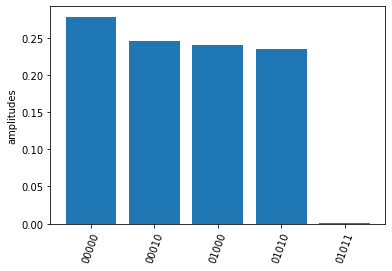
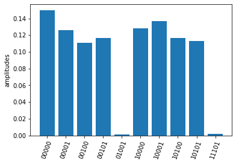

User Guidence
Installation
Run following codes in command line
pip install pyquafu
or
git clone https://github.com/ScQ-Cloud/pyquafu
cd quafu
python setup.py build
python setup.py install
Set up your Quafu account
To use the toolkit pyquafu, firstly you need to register on the Quafu website and get your apitoken <your API token>. If you already have an account, execute the follow code to set up your account.
from quafu import User
user = User()
user.save_apitoken(<your API token>)
You only need to save your token once and no longer need to execute above code when you use quafu after, except you want to change your account.
Build your first quantum circuit
Initialize a circuit with 5 qubits
import numpy as np
from quafu import QuantumCircuit
q = QuantumCircuit(5)
Add quantum gates. For quantum gates Quafu supports, please check the API reference for QuantumCircuit
q.x(0)
q.x(1)
q.cnot(2, 1)
q.ry(1, np.pi/2)
q.rx(2, np.pi)
q.rz(3, 0.1)
q.cz(2, 3)
<quafu.circuits.quantum_circuit.QuantumCircuit at 0x1fa56e848b0>
Add measurement information including qubits measured (measures) and the classical bits keeping the measured results (cbits). If there is no measurement information provided, all qubits are measured by default.
measures = [0, 1, 2, 3]
cbits = [0, 1, 2, 3]
q.measure(measures, cbits=cbits)
You can draw the circuit using the draw_circuit method and use width parameter to adjust the length of the circuit.
q.draw_circuit(width=4)
q[0] ------X----------------------------- M->c[0]
q[1] ------X--------+----RY(1.571)------- M->c[1]
|
q[2] ---------------*----RX(3.142)----*-- M->c[2]
|
q[3] --RZ(0.100)----------------------Z-- M->c[3]
You can also initial your quantum circuit with openqasm text. QuantumCircuit class provides the from_openqasm method for initializing quantum circuit directly from openqasm.
qc = QuantumCircuit(4)
test_ghz = """OPENQASM 2.0;
include "qelib1.inc";
qreg q[4];
h q[0];
cx q[0],q[1];
cx q[0],q[2];
cx q[0],q[3];
"""
qc.from_openqasm(test_ghz)
qc.draw_circuit()
q[0] --H----*----*----*-- M->c[0]
| | |
q[1] -------+----|----|-- M->c[1]
| |
q[2] ------------+----|-- M->c[2]
|
q[3] -----------------+-- M->c[3]
Submit your circuit
Now you are ready to submit the circuit to the experimental backend. First initial a Task object and load your account.
from quafu import Task
task = Task()
task.load_account()
You can configure your task properties using the config method. Here we choose the backend (backend) as ScQ-P10, the single shots number (shots) as 2000 and to compile the circuit on backend (compile).
task.config(backend="ScQ-P10", shots=2000, compile=True)
If you set the compile parameter to False, make sure that you know the topology of the backend well and submit valid circuit.
Send the quantum circuit to the backend. Here we send circuit q.
res = task.send(q)
You can use the returned results to check the count and amplitude on each measured bit string. The output bits are arranged as 0, 1, 2,... from left to the right.
print(res.counts) #counts
print(res.amplitudes) #amplitude
res.plot_amplitudes()
OrderedDict([('0010', 22), ('0011', 2), ('0110', 20), ('1000', 30), ('1001', 2), ('1010', 837), ('1011', 156), ('1100', 44), ('1110', 734), ('1111', 153)])
{'0010': 0.011, '0011': 0.001, '0110': 0.01, '1000': 0.015, '1001': 0.001, '1010': 0.4185, '1011': 0.078, '1100': 0.022, '1110': 0.367, '1111': 0.0765}

If you want to check the correctness the execute results. Quafu provide simple circuit similator based on sparse matrix.
from quafu import simulate
simu_res = simulate(q, output="amplitudes")
simu_res.plot_amplitudes(full=True)

You can also submit the 4-bit ghz circuit qc built from openqasm.
res = task.send(qc)
res.plot_amplitudes()
simu_res = simulate(qc)
simu_res.plot_amplitudes(full=True)


If you don't want to plot the results for basis with zero amplitudes, set the parameter full in method plot_amplitudes to False. Note that this parameter is only valid for results returned by simulator.
Submit circuit and measure observables
Quafu provides measuring observables with an excuted quantum circuit. You can input Pauli operators that need to measure expectation values to the submit method.
For example, you can input [["XYX", [0, 1, 2]], ["Z", [1]]] to calcuate the expectation of operators and .
The submit method will minimize the executing times of the circuit with different measurement basis that can calculate all expectations of input operators.
Here we show how to measure the energy expection of the Ising chain
First we initialize a circuit with three Hadamard gate
q = QuantumCircuit(5)
for i in range(5):
if i % 2 == 0:
q.h(i)
q.draw_circuit()
measures = list(range(5))
q.measure(measures)
q[0] -H- M->c[0]
q[1] --- M->c[1]
q[2] -H- M->c[2]
q[3] --- M->c[3]
q[4] -H- M->c[4]
Next we set operators that need to be measured to calculate the energy expectation, and submit the circuit using submit method
test_Ising = [["X", [i]] for i in range(5)]
test_Ising.extend([["ZZ", [i, i+1]] for i in range(4)])
res, obsexp = task.submit(q, test_Ising)
Job start, need measured in [['XXXXX', [0, 1, 2, 3, 4]], ['ZZZZZ', [0, 1, 2, 3, 4]]]
The function return measurement results and operator expectations. The measurement results only contain two ExecResult object since the circuit is only executed twice, with measurement basis [['XXXXX', [0, 1, 2, 3, 4]] and ['ZZZZZ', [0, 1, 2, 3, 4]]] respectively.
res[0].plot_amplitudes()
res[1].plot_amplitudes()


The return operator expectations (obsexp) is a list with a length equal to the input operator number. We can use it to calculate the energy expectation
print(obsexp)
g = 0.5
E = g*sum(obsexp[:5])+sum(obsexp[5:])
print(E)
[0.9930000000000001, -0.018000000000000016, 1.001, 0.03200000000000003, 1.001, 0.007000000000000006, 0.007000000000000006, -0.05800000000000005, -0.05800000000000005]
1.4024999999999999
Submit task asynchronously
In the above examples, you have to wait for the result to return and cannot do other jobs continually. Now you can choose to set the parameter wait in send function to false to submit the task asynchronously and do not need it to return. When you need, you can retrieve the results at any time and check the status using the retrieve function. Here, we use the example that measuring the qubit decoherence time to show the detailed usage.
First initial a task
task = Task()
task.load_account()
task.config(backend="ScQ-S10", shots=2000, compile=True, priority=2)
Prepare parameters of a group of tasks and send the task asynchronously.
ts = range(0, 41, 4) #delay time list
names = ["%dus" %t for t in ts] #name list
for name, t in zip(names, ts):
q = QuantumCircuit(2)
q.x(1)
q.delay(1, t, unit="us")
res = task.send(q, wait=False, name=name, group="Q1_T1")
Here the delay options will idle the target qubit 1 for a duration t in the time unit us(microsecond) and do nothing. In the send function, we set wait too false to execute the task asynchronously, give each task a name by duration time and set all tasks to a group named "Q1_T1".
Now we can try to retrieve the group of tasks using the retrieve_group method.
group_res = task.retrieve_group("Q1_T1")
amps = [res.amplitudes["01"] for res in group_res]
print(amps)
Group: Q1_T1
task_id task_name status
15FC712038B5CAAE 0us Completed
15FC71300DD50BD1 4us Running
15FC7130229491CF 8us Completed
15FC713036E64E56 12us Completed
15FC71400FBEAB8E 16us In Queue
15FC71401FECB2F0 20us In Queue
15FC714033B2CD5E 24us In Queue
15FC71500ED001E6 28us In Queue
15FC715020AF62C8 32us In Queue
15FC71503653E9C9 36us In Queue
15FC716010581117 40us In Queue
[0.9775, 0.7745, 0.722]
group_res = task.retrieve_group("Q1_T1")
Group: Q1_T1
task_id task_name status
15FC712038B5CAAE 0us Completed
15FC71300DD50BD1 4us Completed
15FC7130229491CF 8us Completed
15FC713036E64E56 12us Completed
15FC71400FBEAB8E 16us Completed
15FC71401FECB2F0 20us Completed
15FC714033B2CD5E 24us Completed
15FC71500ED001E6 28us Completed
15FC715020AF62C8 32us Completed
15FC71503653E9C9 36us Completed
15FC716010581117 40us Completed
Once all tasks are completed, we can do the next step.
print(amps)
import matplotlib.pyplot as plt
plt.plot(ts, amps, "-o")
[0.9775, 0.9045, 0.7745, 0.722, 0.4295, 0.5205, 0.561, 0.481, 0.5, 0.492, 0.4275]
[<matplotlib.lines.Line2D at 0x1fe32568c10>]

Note that task retrieving relies on the submit history saved in the task object. If your task object is changed or detroyed in the memory, you may get the wrong results. Suppose you have to close your program after submitting tasks, you need first save the history associated to the task object.
old_history = task.get_history() #get the history of task
#save the history to disk if you need!
#do save...
#retrieve the result using the `history` parameter with any Task() object
#do load...
newtask = Task()
newtask.load_account()
group_res = newtask.retrieve_group("Q1_T1", history=old_history)
Group: Q1_T1
task_id task_name status
15FC712038B5CAAE 0us Completed
15FC71300DD50BD1 4us Completed
15FC7130229491CF 8us Completed
15FC713036E64E56 12us Completed
15FC71400FBEAB8E 16us Completed
15FC71401FECB2F0 20us Completed
15FC714033B2CD5E 24us Completed
15FC71500ED001E6 28us Completed
15FC715020AF62C8 32us Completed
15FC71503653E9C9 36us Completed
15FC716010581117 40us Completed
Finally, you can also retrieve a single task using its unique task_id.
res_0us = newtask.retrieve(old_history["Q1_T1"][0])
print(res_0us.amplitudes)
{'01': 0.9775, '11': 0.0225}